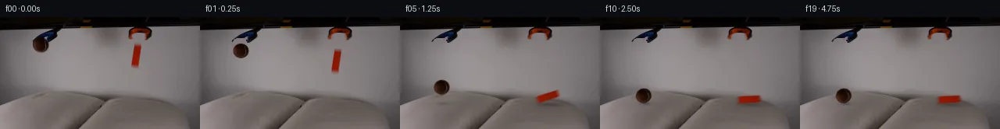

![首帧]()

Round 00
2026-11-04T19:00:46.127795+00:00像素候选变化代码 +272/−0inspection 更新
pixels f60e172086ab1355 · code ac9a23895df5e007
查看本轮 generate.py 真实 diff
--- previous/generate.py
+++ current/generate.py
@@ -0,0 +1,272 @@
+"""Source-pixel continuation with local reconstruction and analytic rigid-body motion.
+No image viewing, external model, network, or renderer is used.
+"""
+from pathlib import Path
+import json
+import numpy as np
+from PIL import Image, ImageDraw
+from scipy import ndimage
+from artifact_io import save
+
+ROOT = Path(__file__).resolve().parent
+SRC = np.array(Image.open(ROOT / 'first_frame.png').convert('RGB'))
+H, W = SRC.shape[:2]
+Y, X = np.mgrid[:H, :W].astype(float)
+F = SRC.astype(float)
+R, G, B = F.transpose(2, 0, 1)
+
+def smooth(a):
+ a = np.clip(a, 0, 1)
+ return a*a*(3-2*a)
+
+def fill_holes(src, mask):
+ """Dirichlet discrete harmonic background fill, seeded from nearby pixels."""
+ out = src.copy()
+ _, idx = ndimage.distance_transform_edt(mask, return_indices=True)
+ out[mask] = src[idx[0][mask], idx[1][mask]]
+ for _ in range(600):
+ mean = (np.roll(out, 1, 0) + np.roll(out, -1, 0)
+ + np.roll(out, 1, 1) + np.roll(out, -1, 1)) * .25
+ out[mask] = mean[mask]
+ return out
+
+# Independent masks distinguish the warm objects from the neutral/blue tool.
+ball_area = ((X-51.9)/11.1)**2 + ((Y-36)/10.3)**2 < 1
+ball_region = ball_area & (Y >= 26)
+left_tool = ((X >= 40) & (X <= 72) & (Y >= 17) & (Y <= 34)
+ & (((B-R) > 6) | ((R < 65) & (np.abs(R-B) < 9))))
+# Brown core belongs to the ball, including its dark upper hemisphere.
+left_tool &= ~((R-G > 7) & (R-B > 10))
+left_tool = ndimage.binary_dilation(left_tool, iterations=1)
+left_tool &= (X >= 40) & (X <= 72) & (Y >= 18) & (Y <= 34)
+# Source pixels that are brown are never assigned to the moving fingers.
+left_tool &= ~((R-G > 9) & (R-B > 12) & ball_area)
+right_tool = ((X >= 163) & (X <= 196) & (Y >= 19) & (Y <= 31)
+ & ((R-G > 15) | (G < 62)))
+right_tool = ndimage.binary_dilation(right_tool, iterations=1)
+right_tool &= (Y >= 19) & (Y <= 31) & (X >= 162) & (X <= 197)
+block_region = (X >= 166) & (X <= 183) & (Y >= 32) & (Y <= 67)
+all_holes = ball_region | left_tool | right_tool | block_region
+PLATE = fill_holes(F, all_holes)
+# Shaft/head pixels above these masks are retained in the plate exactly.
+# Tool layers are signed source-background differences; this preserves all
+# original shading/antialiasing against the nearly uniform local backdrop.
+left_delta = (F-PLATE)*left_tool[...,None]
+right_delta = (F-PLATE)*right_tool[...,None]
+
+# Build an unoccluded small sphere using the measured photographed texture.
+# A faint analytical extension is needed only at its cropped/occluded rim.
+by, bx = np.mgrid[-13:14, -13:14].astype(float)
+BALL_CX, BALL_CY = 51.9, 36.0
+BRX, BRY = 10.0, 9.4
+q = np.sqrt((bx/BRX)**2 + (by/BRY)**2)
+ball_alpha = smooth((1.055-q)/.115)
+coords = np.array([by+BALL_CY, bx+BALL_CX])
+raw = np.stack([ndimage.map_coordinates(F[:,:,c], coords, order=1, mode='nearest') for c in range(3)], -1)
+background = np.stack([ndimage.map_coordinates(PLATE[:,:,c], coords, order=1, mode='nearest') for c in range(3)], -1)
+light = np.exp(-((bx+7)/3.0)**2-((by-1.0)/6.3)**2)
+edge = np.clip((q-.6)/.5, 0, 1)
+base_r = 32 + 41*light + 10*edge + 4*(by/BRY)
+base_g = 12 + 25*light + 6*edge + 3*(by/BRY)
+base_b = 5 + 19*light + 5*edge + 2*(by/BRY)
+analytic = np.stack([base_r,base_g,base_b],-1)
+# The source's curved pale seam is retained wherever it is recorded.
+valid = (raw[:,:,0]-raw[:,:,1] > 7) & (raw[:,:,0]-raw[:,:,2] > 9) & (q < .88)
+_, near = ndimage.distance_transform_edt(~valid, return_indices=True)
+texture = raw[near[0],near[1]]
+# Preserve interior photographed texels; fade their nearest extension at rim.
+weight = smooth((.98-q)/.24)
+ball_rgb = texture*weight[...,None]+analytic*(1-weight[...,None])
+# Reproducible subpixel felt grain at the reconstructed rim only.
+rng = np.random.default_rng(3003)
+ball_rgb += rng.normal(0,.8,q.shape)[...,None]*(1-weight[...,None])
+ball_rgb = np.clip(ball_rgb,0,255)
+
+# Extract the narrow orange body using chromatic opacity, which excludes the
+# gray/mauve backdrop and preserves the source's softly exposed tips.
+oy, ox = np.mgrid[-19:20,-11:12].astype(float)
… diff truncated; 185 more lines …